Byg din egen agent i Copilot
Du har lært at skrive en god prompt. Nu gemmer du den som en agent, der kan det samme hver gang, og som dine kolleger også kan bruge.

Hvorfor dette modul?
Indtil nu har du skrevet prompten forfra, hver gang du skulle bruge den. Det er fint til enkeltopgaver, men mange opgaver kommer igen: det samme svar til den samme type henvendelse, det samme referat efter det samme møde, den samme tjekliste til den samme slags sag. En agent er en prompt, du har gemt sammen med sine kilder og sine startspørgsmål, så den løser din faste opgave på samme måde hver gang.
- Har din arbejdsplads Copilot, må du bygge agenten der, men så gælder arbejdspladsens regler, og du bruger kun fiktivt indhold.
- Har du ikke, bygger du samme agent som en Gem i Gemini med din private Google-konto. Det er gratis, og byggeklodserne er de samme.
Øvelse 1: Design agenten på papir
Byg først i hovedet. En agent bliver aldrig bedre end beskrivelsen af den.
- Find én opgave fra din praksis, som du løser mindst en gang om ugen, og som ligner sig selv hver gang.
- Giv agenten et kort navn og en beskrivelse i én sætning: hvad kan den, og for hvem?
- Skriv instruktionerne med byggeblokkene: rolle, opgave, format og begrænsning. Hvad må den ikke?
- Find den viden, agenten skal slå op i, fx en fiktiv tjekliste, en skabelon eller en vejledning.
- Skriv tre startprompts: de spørgsmål, en kollega typisk ville stille den.
| Byggeblok fra dag 2 | Hvor den hører hjemme i agenten |
|---|---|
| Rolle, opgave, format, begrænsning | Instruktioner |
| Kontekst og data | Viden: dokumenter, hjemmesider eller andre kilder |
| Eksempler | Instruktioner eller startprompts |
Skabelon til instruktionerne (kopiér og udfyld)
Øvelse 2: Byg agenten
Vælg sporet, der passer til din konto. Knapperne kan stå på dansk eller engelsk, afhængigt af dit sprog.
Microsoft 365 Copilot
Med arbejds- eller skolekonto, og kun hvis din arbejdsplads tillader det.
Gemini Gems
Med privat Google-konto, gratis. Samme idé, et andet værktøj.
- Åbn Microsoft 365 Copilot, og log ind med din arbejdskonto.
- Vælg Ny agent (New agent) i venstre side.
- Du kan beskrive agenten med almindeligt sprog, så udfylder Copilot felterne for dig. Eller du kan vælge at konfigurere den selv (Skip to configure). Prøv det første, og ret bagefter.
- Under Konfigurer (Configure) tjekker du navn, beskrivelse og instruktioner. Indsæt dine egne instruktioner fra øvelse 1, hvis Copilots udgave ikke rammer.
- Under Viden (Knowledge) tilføjer du dit fiktive dokument eller en offentlig hjemmeside.
- Tilføj dine tre startprompts, og klik Opret (Create).
- Åbn gemini.google.com med din private Google-konto.
- Find Gems i venstre side, og vælg Ny Gem.
- Giv den navnet fra øvelse 1, og indsæt dine instruktioner.
- Tilføj dit fiktive dokument som viden.
- Gem, og åbn din Gem fra listen.
Øvelse 3: Test og forbedr
- Stil agenten tre realistiske, fiktive opgaver. I Copilot gør du det under Prøv det (Try it).
- Stil den én opgave, den ikke skal løse. Siger den pænt nej, eller gætter den?
- Tjek, om den bruger dine kilder, og om den siger det, når svaret ikke står i dem.
- Ret instruktionerne efter hvert forsøg, og test igen. Det er samme mønster som i modul 1: prøv, kig, ret.
- Byt agent med din sidemakker, og prøv hinandens. Forstår en anden, hvad agenten er til?
Hvad skete der lige?
Refleksion i plenum
- Hvilken opgave valgte du, og hvorfor lige den?
- Hvor ofte skulle du rette instruktionerne, før agenten ramte?
- Hvad skete der, da din sidemakker brugte din agent?
Kilder og videre læsning
- Microsoft Learn: Build agents in Agent Builder, den officielle vejledning med alle felter
- UCL's vejledning fra dag 3 om Copilot Studio agent builder
- De syv byggeblokke fra dag 2